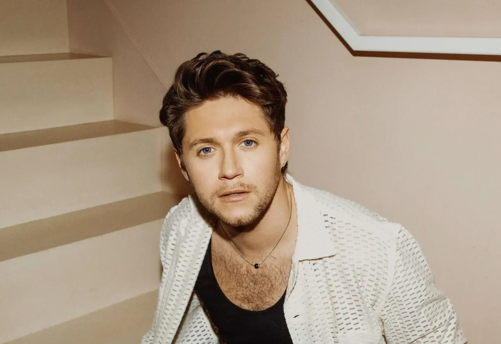
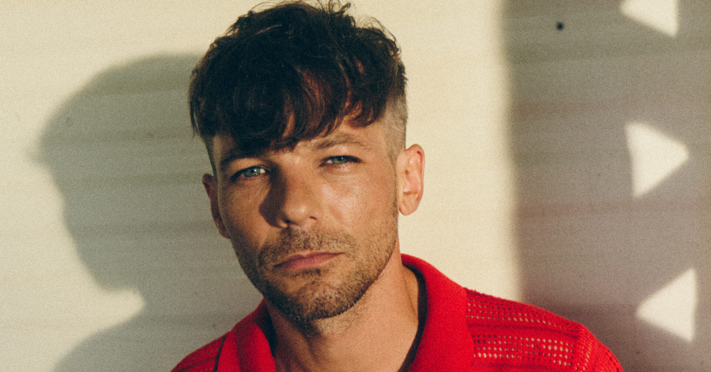
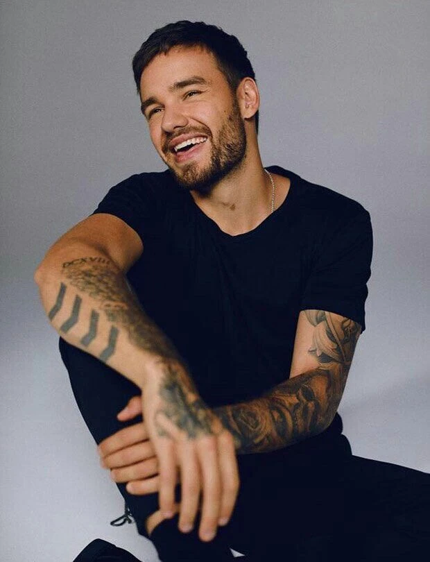
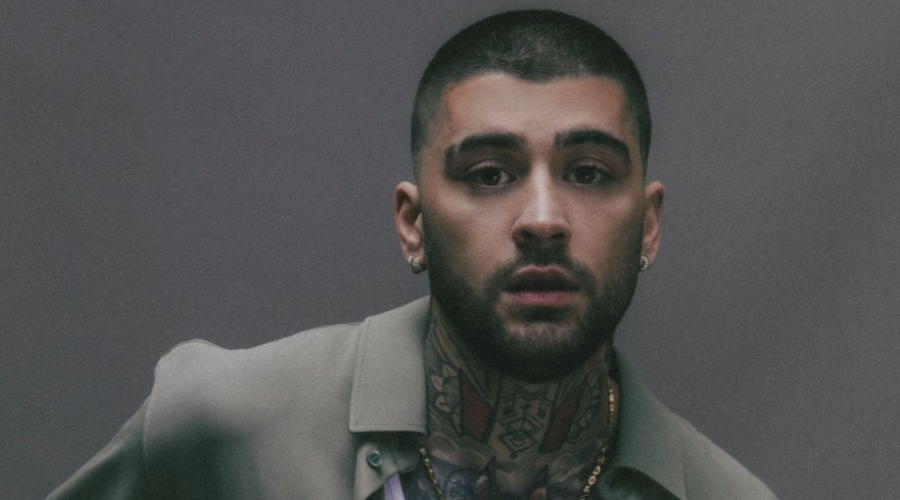

Harry Styles
Vocalista, Nació el 1 de febrero de 1994 en el pueblo de Holmes Chapel, ubicado en Cheshire, Reino Unido, bajo el nombre de Harry Edward Styles. Es hijo de Des Styles y Anne Cox, y hermano menor de Gemma Styles. Los padres de Harry se divorciaron cuando él tenía solo siete años y su madre ha comentado que siempre lo ha apoyado en todo. Estudió en la Holmes Chapel Comprehensive School, donde formó su propia banda llamada White Eskimo junto a sus amigos Haydn Morris, Nick Clough y Will Sweeney. En 2009, participaron en la «Batalla de Bandas» y resultaron ganadores. También trabajó en una panadería durante un tiempo. En 2010, Harry audicionó para The X Factor con la canción «Isn't She Lovely» de Stevie Wonder y resultó elegido.
Niall Horan

Vocalista, nació el 13 de septiembre de 1993 en la ciudad de Mullingar, Irlanda, bajo el nombre de Niall James Horan. Sus padres, Bobby Horan y Maura Nolan, se divorciaron cuando tenía solo cinco años, por lo que él y su hermano Greg Horan tuvieron que vivir en la casa de ambos durante un tiempo. Luego, decidieron mudarse definitivamente con su padre. Comenzó a tocar la guitarra luego de que su familia le regalase una en Navidad, y según él, es el mejor regalo que ha recibido. A principios de 2010, participó en el concurso Academy 2 con la canción «Baby» de Justin Bieber. Luego, audicionó en el casting de The X Factor realizado en la ciudad de Dublín con la canción «So Sick» de Ne-Yo.Louis Tomlinson

Vocalista, nació el 24 de diciembre de 1991 en Doncaster, Reino Unido, bajo el nombre de Louis Troy Austin. Es hijo de Troy Austin y Johannah Poulston (1973-2016) y medio-hermano mayor de Charlotte "Lottie", Félicité "Fizzy" (2000-2019)y las gemelas Phoebe y Daisy (producto del matrimonio de su madre con Mark Tomlinson) y Ernest y Doris (gemelos nacidos en 2014 producto de su matrimonio con Daniel Deakin). En una entrevista con Daily Record, su madre explicó que se separó de Troy Austin cuando Louis era joven, así que adoptó el apellido de su en aquel entonces padrastro, Mark Tomlinson. Tiene otra medio-hermana llamada Georgia Austin, hija de su padre biológico.Liam Payne

Vocalista,nació el 29 de agosto de 1993 en Wolverhampton, Reino Unido, bajo el nombre de Liam James Payne. Era hijo de Geoff y Karen Payne, y hermano menor de Ruth y Nicola. Liam audicionó para The X Factor en 2008, y Simon Cowell lo eliminó en la ronda final ya que creía que era muy joven. Cowell le pidió que volviese a audicionar cuando fuese mayor. Dos años más tarde, audicionó nuevamente para The X Factor con «Cry Me a River» y recibió una ovación de pie por parte del público. En la siguiente etapa, interpretó «Stop Crying Your Heart Out» de Oasis, pero no aplicó para la categoría de «Chicos», por lo que fue integrado a One Direction. El 16 de octubre de 2024, Payne falleció a los 31 años de edad, tras caer de un tercer piso del CasaSur Palermo Hotel, localizado en el barrio de Palermo, Buenos Aires.Zayn Malik

Vocalista, nació el 12 de enero de 1993 en la ciudad de Bradford, Reino Unido, bajo el nombre de Zayn Javadd Malik. Es hijo del paquistaní Yaser Malik y la inglesa Tricia Brannan, y tiene dos hermanas menores, Waliyha Malik y Safaa Malik, además de una hermana mayor llamada Doniya Malik. Creció en el área de East Bowling, al sur de Bradford. En su adolescencia, su madre explicó al diario Daily Record que pasaba la mayor parte del tiempo en su ordenador escuchando música y cantando solo durante horas. En 2009, Zayn iba a audicionar para The X Factor, pero debido a los nervios, se retiró antes de poder presentarse ante los jueces. Luego, en 2010, audicionó con la canción «Let Me Love You» de Mario Dewar Barrett y logró avanzar a la segunda etapa. El 25 de marzo de 2015, finalizando la segunda etapa del On the Road Again Tour, Zayn anunció oficialmente su retirada de One Direction.